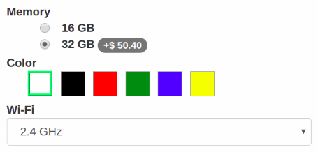
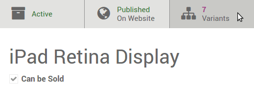
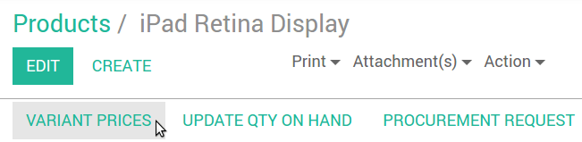
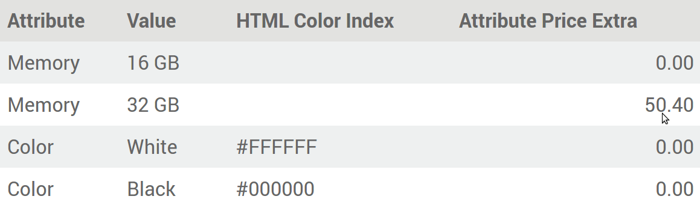
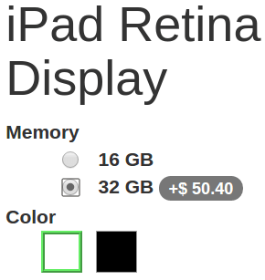
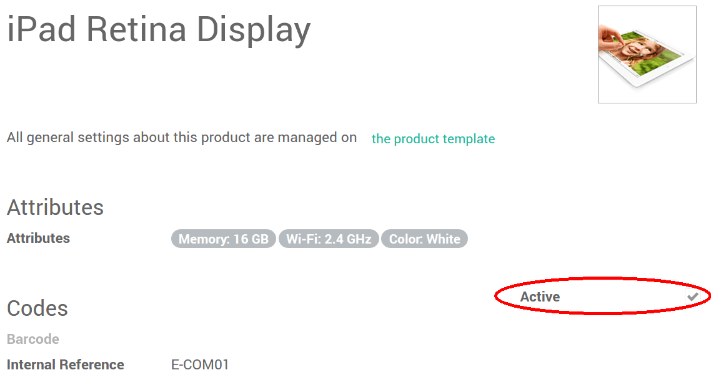
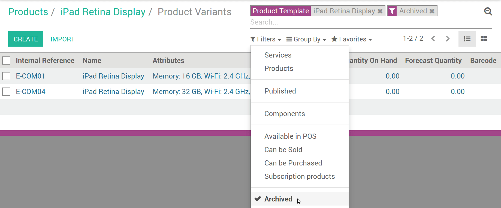

Product variants are used to offer variations of the same product to your customers on the products page. For example, the customer chooses a T-shirt and then selects its size and color. In the example below, the customer chooses a phone, and then selects the memory; color and Wi-Fi band from the available options.
How to create attributes & variants
- Turn on Products can have several attributes, defining variants (Example: size, color,...) in .
- Select a product from the Products list, go to the Variants tab.
- Add as many attributes as you need from 3 different types: radio buttons, drop-down menu or color buttons. You get several variants as soon as there are 2 values for 1 attribute.
How to edit variants
See all the variants from the product template detail form.
{kind=link}
You can edit following data:
- Picture (will update in real time on the website),
- Barcode,
- Internal Reference (SKU #),
- Volume,
- Weight,
- Active (available in quotes & website).
Note
Both the Barcode and the Internal Reference are variant-specific. You need to populate them once the variants generated.
Tip
See and edit all the variants from as well. This might be quicker if you manage lots of variants.
How to set specific prices per variant
You can also set a specific public price per variant by clicking Variant Prices in the product detail form (action in top-left corner).
The Price Extra is added to the product price whenever the corresponding attribute value is selected.
Tip
Pricelist formulas let you set advanced price computation methods for product variants. See How to adapt the prices to my website visitors.
How to disable/archive variants
You can disable/archive specific variants so that they are no longer available in quotes & website (not existing in your stock, deprecated, etc.). Simply uncheck Active in their detail form.
To retrieve such archived items, hit Archived on searching the variants list. You can reactivate them the same way.
